ጥምቀት(Timket)
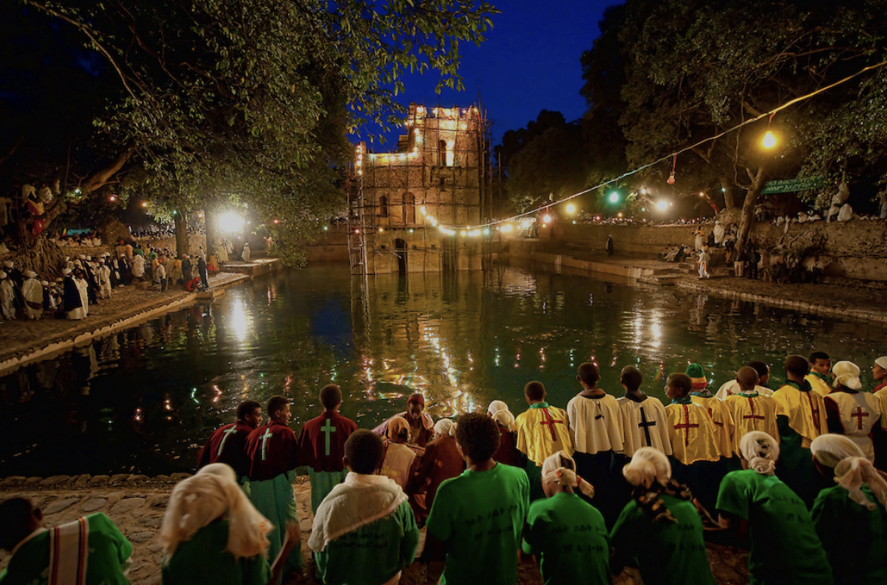ጥምቀት is one of the most significant and colorful religious festivals in Ethiopia, celebrated by Ethiopian Orthodox Christians. It commemorates the baptism of Jesus Christ in the Jordan River by John the Baptist. The festival typically celebrated on 10th of Tir in ethiopian calander (or January 20th during a leap year) and lasts for three days.
The outfits worn during the Timket festival in Ethiopia are deeply rooted in cultural and religious traditions. The attire is typically white, symbolizing purity and holiness, and it reflects both the religious significance of the event and Ethiopian cultural identity.
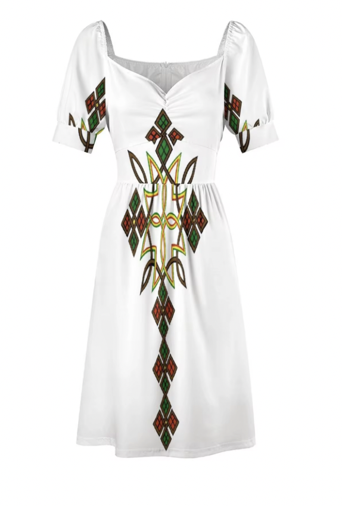 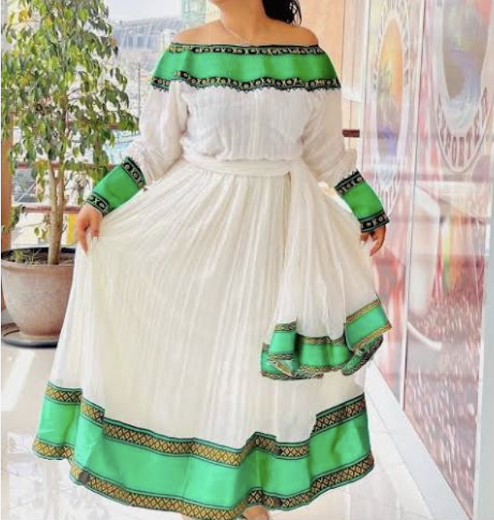 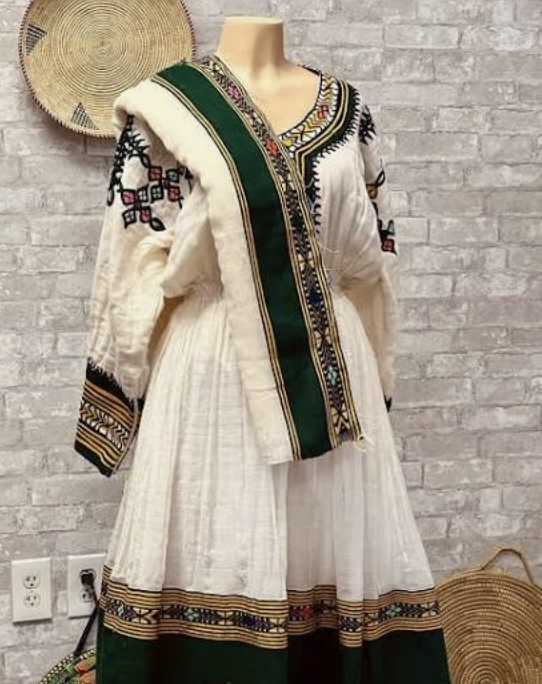
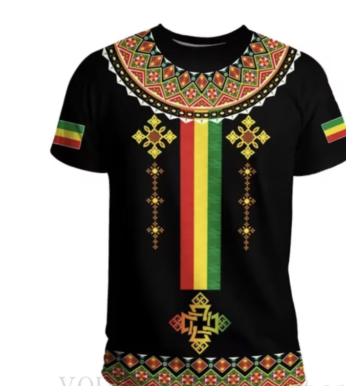 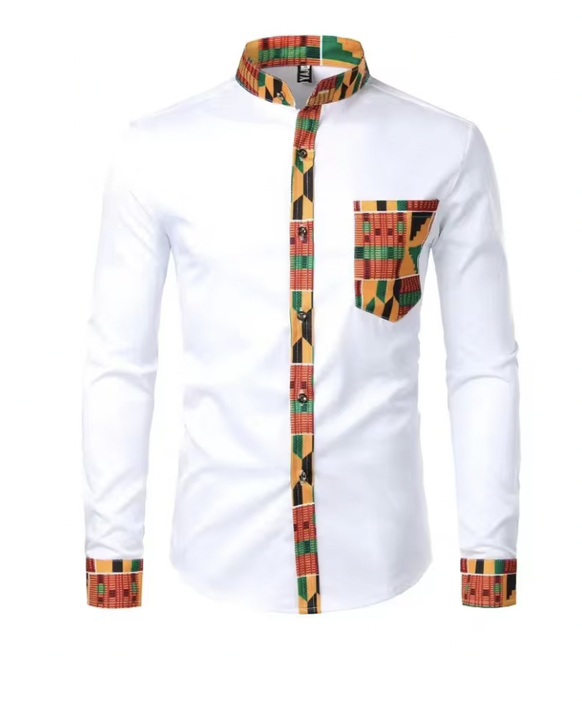
Foods
Ethiopian meals, especially during Timket, are usually communal, with families and friends gathering
around a large platter. The meal is shared, with everyone using pieces of injera to pick up the
different dishes. One of my favorite food to eat during this holiday is Beyaynetu is a
vegetarian platter that features a variety of lentils, pulses, and vegetable stews. Each item
is placed on top of injera, creating a colorful and nutritious spread. Common components
include misir wat (spiced lentils), shiro (a chickpea or broad bean stew), and various sautéed
or spiced vegetables.
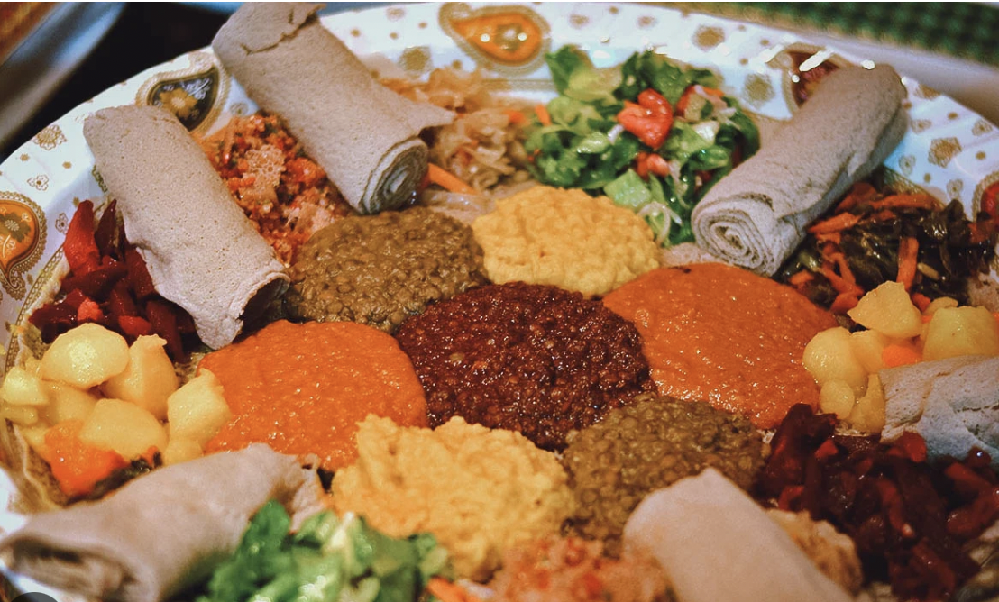 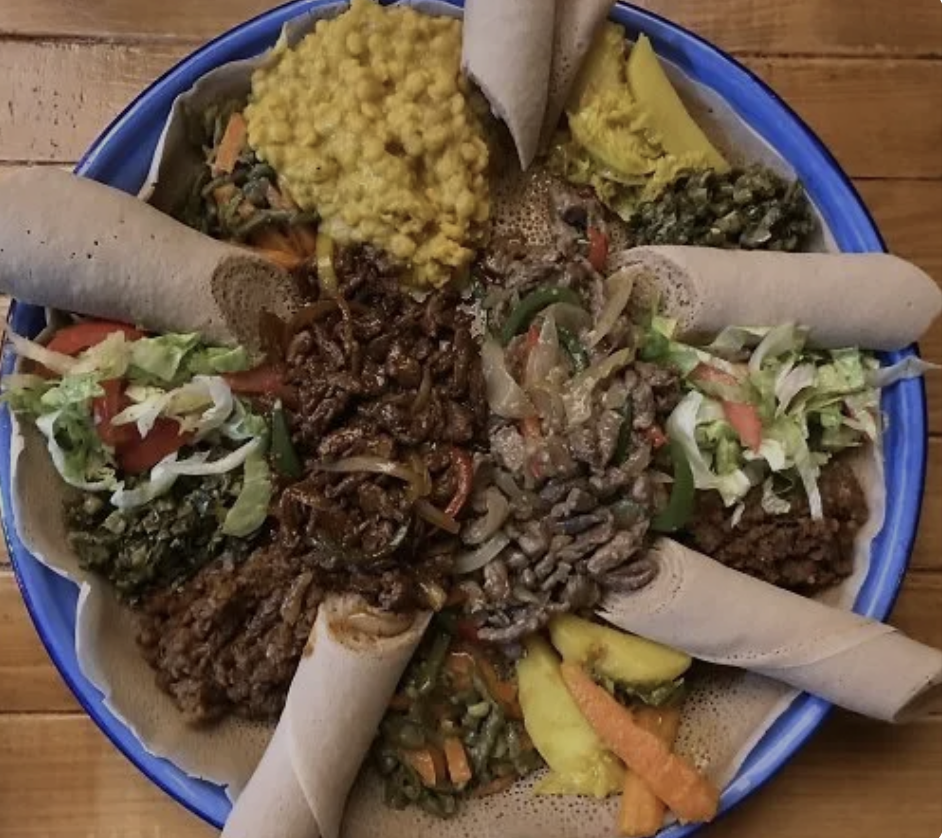
Drinks
Tej is a traditional Ethiopian honey wine, often homemade, and served during special occasions
like Timket. It has a sweet, slightly tangy flavor and is usually sipped from small glasses.
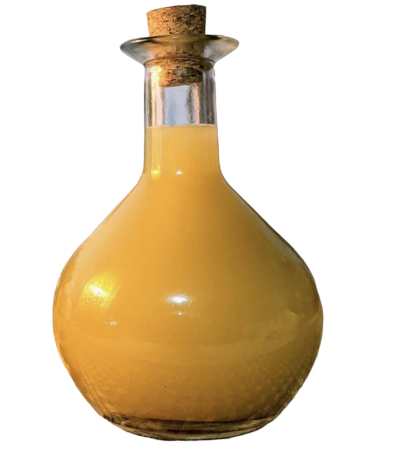 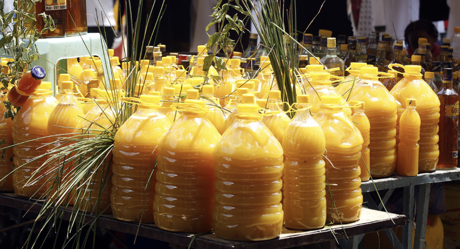
Keribo is a traditional Ethiopian food specially prepared for children, particularly during
fasting periods when adults abstain from animal products. Keribo is a simple yet nutritious
dish made from roasted barley flour, and it can be prepared in various ways depending on the
ingredients available and the child's preference.
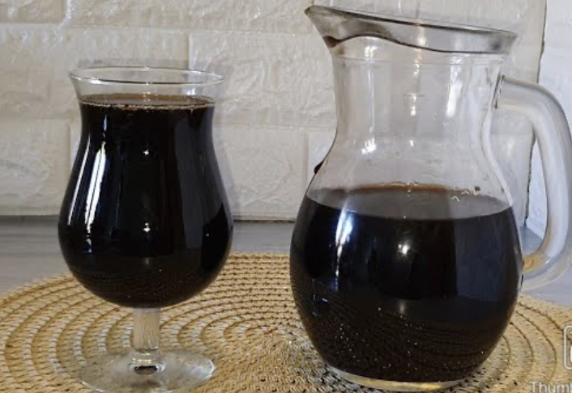 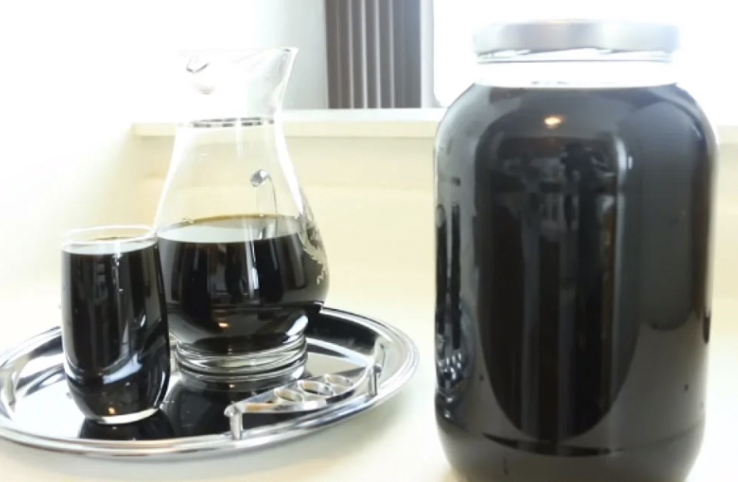